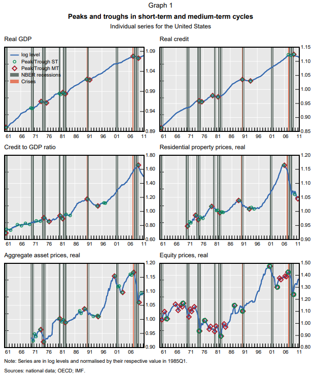
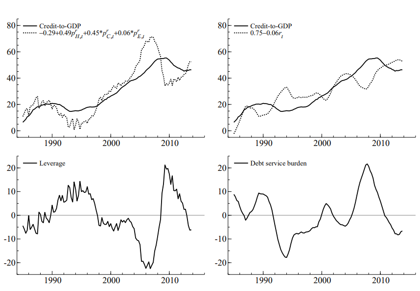

시스템 리스크 분석: (2-1) 거시경제지표를 활용한 경제전체 위험도 측정 방법
Systemic Risk Measure - Macroeconomic risk
서상원 (2018)
시스템리스크 측정 방법 중 거시경제지표를 활용한 경제전체 위험도를 살펴본다.
거시경제지표를 활용한 경제전체 위험도
FCYCL: Financial Cycle
Drehmann, Borio and Tsatsaronis(2012)
실물부문에서 호황과 불황이 교대로 나타나는 경기변동이 있듯이 금융부문에서도 그와 유사한 변동으로 금융변동을 제시
금융사이클 산출을 위한 변수 5개
- 민간신용
- GDP 대비 신용 비율
- 주가
- 주택가격
- (주거용, 상업용 부동산 가격, 주가 등) 종합자산 가격
Band-pass 필터: 5개의 금융변수 각각에 대해 특정주기에 대한 정보만을 추출 (단기 사이클 1-8년 / 중기 사이클 8-30년)
전환점 분석법(turning-point analysis): 사이클의 정점(peak)과 저점(trough)을 특정
- 단기 사이클
- 매 분기마다 그 분기를 중심으로 전후 5분기 범위에서 그 분기의 값이 가장 크면 그 분기를 국지적 극대, 가장 작으면 국지적 극소로 정의
- 이 국지적 극대와 극소 중에서 각 사이클의 최소 길이가 5분기 보다 길고 확장 또는 수축 국면의 기간이 최소 2분기 이상인 경우를 정점 또는 저점으로 지정
- 중기 사이클
- 전후 9분기 범위에서 국지적 극대와 극소를 정하고 사이클의 최소 길이는 8년으로 정한다. 전환점 분석법을 금융사이클 및 개별지 수에 적용하여 각각의 정점과 저점들을 정한 후
- 금융사이클의 정점(저점)을 중심으로 개별 정점(저점)들이 6분기 이내에 있으면 정규(regular) 전환점으로, 그리고 6~12분기 이내에 있으면 약(weak) 전환점이라고 정의
- 단기 사이클
실험: 1960~2011년 기간동안 7개국에 대해 적용
분석 결과: 금융사이클과 실물 경기변동간에 긴밀한 관계가 있음. 특히, 금융사이클 수축국면에 실물의 경기하락이 겹칠 경우에는 상대적으로 심한 경기하락을 경험. 이러한 분석결과는 금융사이클로 인한 추가적인 경기하락을 방지하고 경기변동을 완화하기 위해서는 금융 사이클을 함께 고려하여야 한다는 점을 시사.

CCYCL: Credit cycle
GDP대비 신용 비율이 담고 있는 정보를 활용: 지속가능 부분(sustainable)과 지속가능하지 않은 부분(unsustainable)으로 구분
- sustainable: 레버리지와 원리금부담(debt service burden)이 GDP대비 신용 비율과 장기적 관계를 가질 것이라고 가정하고 GDP대비 신용 비율 중에서 이 장기적 관계에 의해 설명되는 부분
\({slev}_t = constant + \sum^{b}_{i=1} \psi_i (p_{A_i,t}-p_t)\)
- \({slev}_t\)는 레버리지를 감안한 지속가능한 GDP대비 신용 비율(로그), \(p_{A_i,t}\)는 \(i\)번째 자산가격(로그), \(p_t\)는 물가지수(로그), \(\sum^{b}_{i=1} \psi_i = 1\) 제약
${sleb}_t = constant + r_t $
- \({sleb}_t\)는 원리금부담을 감안한 지속가능한 GDP대비 신용 비율(로그), \(r_t\)는 신용잔고에 대한 평균 명목대출이자율
두 가지의 장기균형관계를 공적분(co-integration) 방법으로 추정
실험: 미국 글로벌 금융위기 이전 기간 케이스
분석 결과:
- 실제 GDP대비 신용 비율이 레버리지를 감안한 지속가능한 GDP대비 신용 비율에 비해 낮게 나타남 \(\rightarrow\) 높은 레버리지를 가지고 주택시장에 신규진입
- 실제 GDP대비 신용 비율은 원리금부담을 감안한 지속가능한 GDP대비 신용 비율에 비해 높아짐 \(\rightarrow\) 원리금부담이 높아지면 소비 및 투자 지출을 감소

EWS-SE (Early warning system-Signal extraction)
Kaminsky, Lizondo and Reinhart(1998)
신호접근법(Signal extraction approach)는 여러 정보변수들을 비모수적 방법으로 활용하여 금융위기의 발생가능성을 예측하는 방법
- 각 국가별로 먼저 위기에 대한 조작적 정의(operational definition)를 하고 그에 기반하여 위기를 나타내면 1을, 아니면 0을 갖는 더미변수 \(S_{j,t}\)를 구성 (\(j\)는 국가, \(t\)는 시간, \(n\)은 n번째 정보변수) - 정보변수는 거시경제변수 등
| crisis | no-crisis | |
| signal | \(A^j_{n,t}\) | \(B^j_{n,t}\) |
| no-signal | \(C^j_{n,t}\) | \(D^j_{n,t}\) |
in-sample 기간의 경우 합산하여 \(A^j_{n}, B^j_{n}, C^j_{n}, D^j_{n}\) 구함
NSR(Noise-to-signal ratio)
- \(w^j_n = \frac{B^j_{n}}{B^j_{n}+D^j_{n}} \div \frac{A^j_{n}}{A^j_{n}+C^j_{n}}\)
- 예측이 정확할수록 0에 가까움
- NSR이 최소가 되도록 각 정보변수별 임계치를 설정
여러 정보변수 중에서 몇 개가 위기신호가 발생하는지를 각 시점별로 관측
- \(K^j_{1t} \equiv \sum^{N}_{n=1}I^j_{nt}\)
- \(I^j_{nt}\)는 n번째 정보변수가 위기신호를 보내는지의 더미변수
- 이러한 종합지수들에 대해 NSR이 최소가 되는 종합지수의 임계치를 설정
외표본기간에서도 위기발생에 대해 높은 예측력을 보이는지를 점검
EWS-LR (Early warning system-Logit regression)
- 로짓모형은 위기발생 확률을 직접 제시해줌. 그러나 통상 위기발생 확률을 직접 사용하기 보다는 그 확률을 이용하여 NSR을 구하고 내표본기간의 NSR을 최소화하는 임계치를 설정
- 위기발생 확률이 임계치를 상회하는 경우 위기신호가 발생하는 방식으로 로짓모형을 조기경보 목적에 활용
EWS-Hybrid (Early warning system-Hybrid)
조기경보모형으로 널리 사용되고 있는 신호접근법과 로짓모형의 각기 장단점을 서로 보완적으로 활용
- 먼저 여러 정보변수들을 그 경제적 내용에 따라 소수의 하위부문으로 구분
- 급작스런 자본유입의 중단 현상의 예측에 대해 17개의 개별 정보변수를 4개의 하위부문(거시경제, 금융, 대외부문 및 해외경제)으로 분류
- 각 국가간 차이를 나타내는 변수 중에서 시기별로 큰 변동을 보이지 않는 5개의 변수를 따로 국가간 차이 변수로서 추가
- 4개의 하위부문에 대해 각각 신호접근법을 적용하여 하위종합지수를 구성
- 이렇게 구성된 4개의 하위종합지수와 5개의 국가간 차이변수 등 9개의 정보변수를 로짓 예측모형에 적용
참고문헌
서상원. (2018). 시스템리스크의 측정과 관리: 서베이와 제언. 금융안정연구, 19(1), 131-232.
Drehmann, M., Borio, C. E., & Tsatsaronis, K. (2012). Characterising the financial cycle: don’t lose sight of the medium term!.
Juselius, M., & Drehmann, M. (2015). Leverage dynamics and the real burden of debt.
Kaminsky, G., Lizondo, S., & Reinhart, C. M. (1998). Leading indicators of currency crises. Staff Papers, 45(1), 1-48.
Suh, S. (2017). Sudden stops of capital flows to emerging markets: A new prediction approach. International Review of Economics & Finance, 48, 289-308.